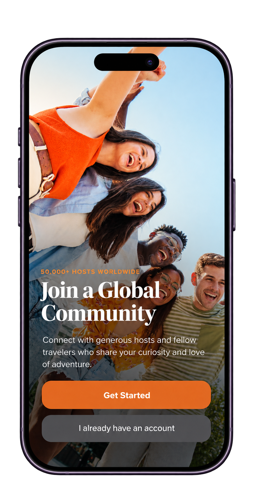
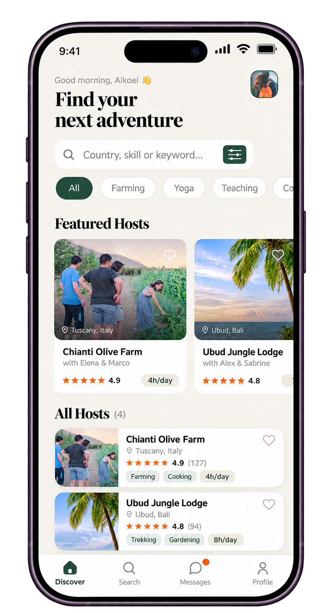
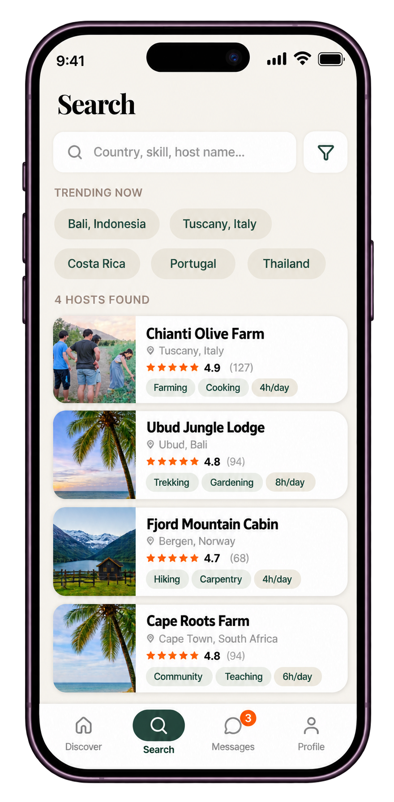
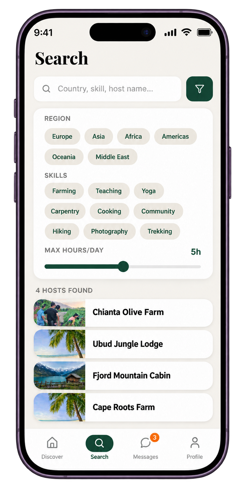
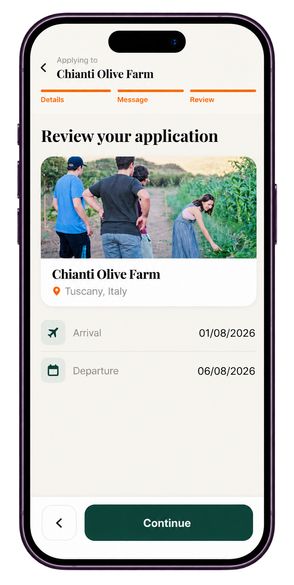
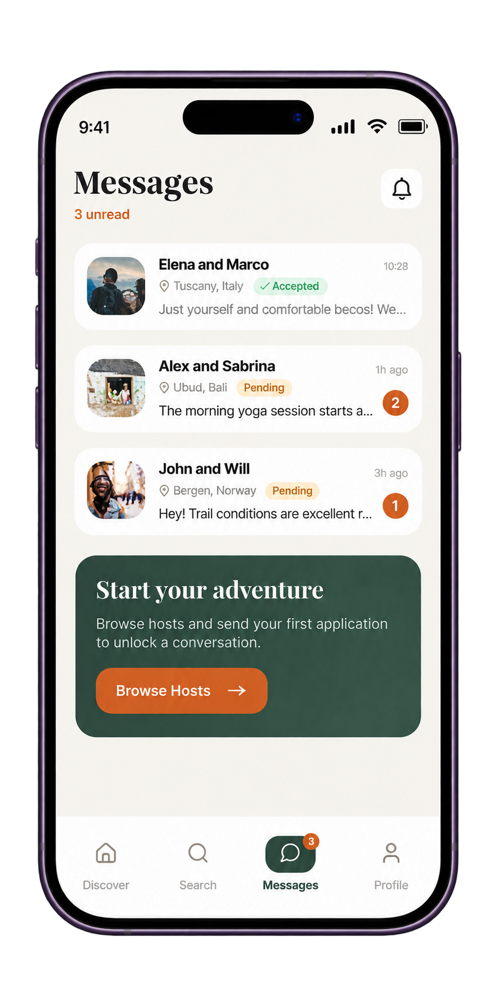
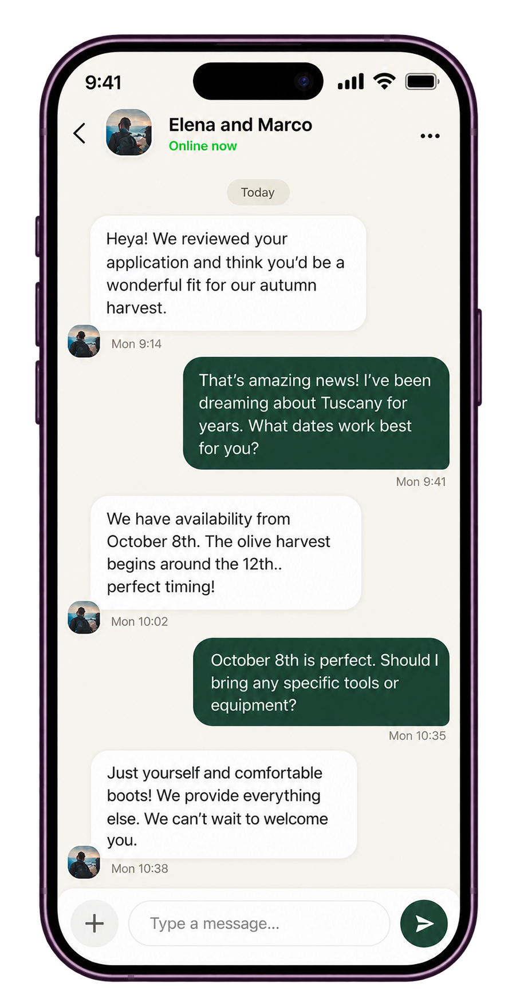

01Travel & volunteering app redesign
Workaway.
A UI/UX redesign of the Workaway mobile app, focused on improving the user experience of discovering volunteering opportunities, exploring host profiles and connecting with hosts. The redesign aims to create a more intuitive, visually consistent and seamless journey from discovery to application.


02Overview
About the redesign.
This project focuses on redesigning the Workaway mobile app to create a smoother and more user-friendly experience for people looking for travel and volunteering opportunities. The redesign brings together host discovery, search, filtering, application review and communication through a more organised and visually consistent interface.
03The challenge
Creating a smoother user experience.
Finding suitable volunteering opportunities involves exploring different hosts, comparing details, applying for opportunities and communicating with them. These interactions need to be presented in a clear and easy-to-navigate way.
The redesign focuses on improving information hierarchy, simplifying navigation, making search and filtering easier to use, and creating a more consistent experience across the different stages of the application journey.
07 Visual design system
Building a consistent visual identity.
The visual design system brings together a warm, earthy colour palette, expressive typography and consistent interface elements. These choices create a welcoming and easy-to-navigate experience while reflecting the spirit of travel, volunteering and community.
Colour palette
A blend of earthy tones, warm neutrals and natural accents.
Typography
A combination of expressive serif headings and clean sans-serif text.
Discover your next adventure.
Used for main titles and prominent headings to give the interface a distinctive, elegant visual identity.
Explore opportunities around the world.
Used for subheadings, section titles and supporting content to maintain clarity and readability.
Used for body text, buttons, navigation, labels and interactive elements throughout the app.
Interface components
Reusable elements designed for a consistent experience.
Terracotta buttons highlight important actions and guide users through the app journey.
Simple search fields help users find destinations, volunteering opportunities and hosts.
Filter chips make it easier to narrow down opportunities based on interests and skills.
Host cards present essential information in a compact and easy-to-scan layout.
04The design
Discover, Explore & Apply.
Explore volunteering opportunities, find the right hosts, refine your search with filters and review your application — all through one seamless mobile experience.




05Host discovery
Explore potential hosts.
Host profiles help visitors review the information available about opportunities before deciding what to explore further.


06Communication
Connect with hosts.
The messaging interface provides a dedicated space for communication within the volunteering journey.


07Reflection
What I explored.
This project gave me an opportunity to work on mobile screen layouts, visual consistency, information hierarchy and the presentation of travel and volunteering opportunities.